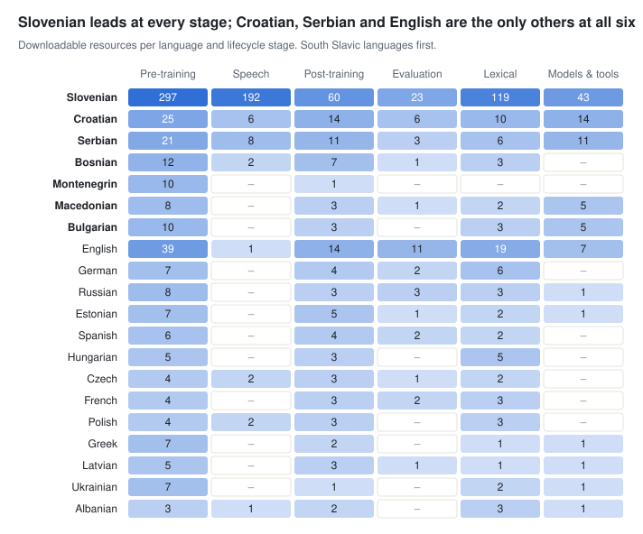
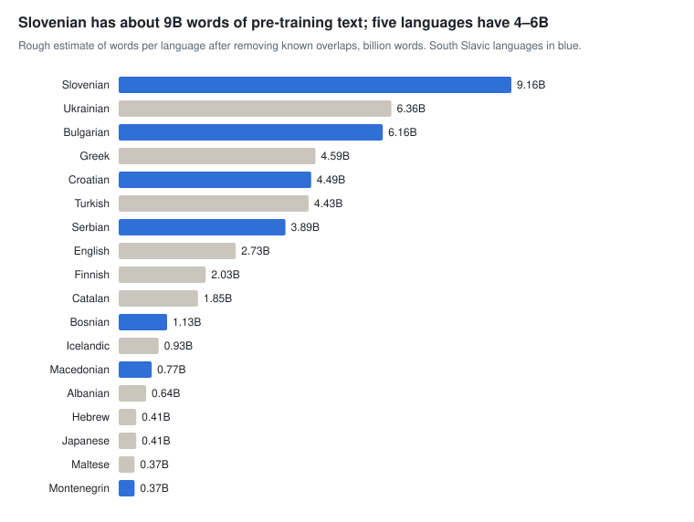
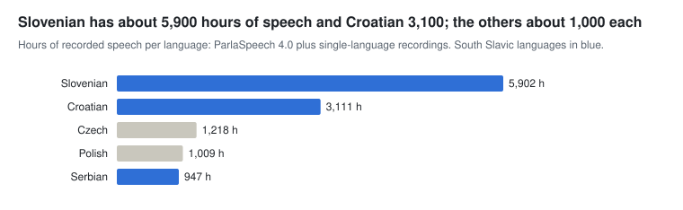
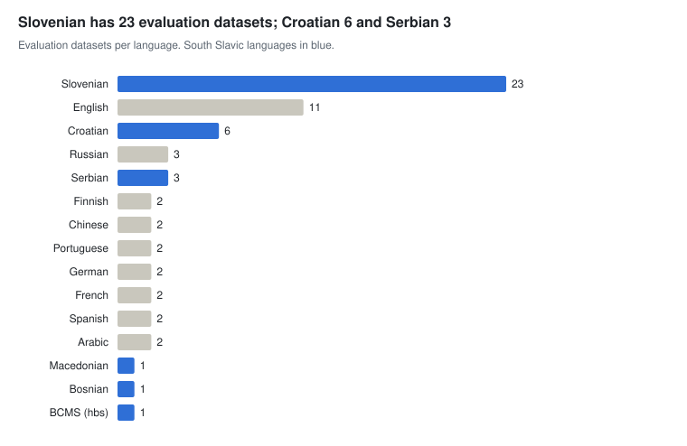

<!-- .slide: data-state="title-slide" --> <div class="title-wrap"> <h1>Data for AI development at CLARIN.SI</h1> <div class="sub">What the repository offers for pre-training, speech, post-training and evaluation</div> <div class="who"><strong>Nikola Ljubešić</strong> · Jožef Stefan Institute · CLARIN.SI<br><span class="muted">November 2026</span></div> </div> Note: Timing guide for 80 minutes: about 70 minutes of talk plus 10 minutes of questions. Per part: CLARIN.SI 7 min · overview 7 · pre-training 22 · speech 11 · post-training 8 · evaluation 5 · lexical and models 3 · concordancers 7 · gaps and wrap-up 5. --- ## What you will take away <div class="cards" style="--n:3"> <div class="card"><h3>Where the data is</h3><p>1,039 resources in one certified repository, 791 of them openly licensed for training, including commercial use.</p></div> <div class="card"><h3>What it is good for</h3><p>About 58B words of pre-training text, about 12,200 hours of speech, 2.2M Slovenian instruction pairs and 30 evaluation sets.</p></div> <div class="card"><h3>How to explore it</h3><p>Browse the overview by lifecycle stage, then skim corpora in the concordancer before you download anything.</p></div> </div> ### Plan 1. CLARIN.SI in five minutes 2. The repository through an AI lens 3. Pre-training data 4. Speech data 5. Post-training and evaluation 6. Exploring corpora in the concordancer 7. Gaps and opportunities Note: The deep dives are on pre-training and speech. Lexical resources and models get only one short slide each. --- <!-- .slide: data-state="section-slide" data-background-color="#004171" --> <div class="section-wrap"> <div class="kicker">Part 1</div> <h1>CLARIN.SI in five minutes</h1> <p>The Slovenian node of the European research infrastructure CLARIN</p> </div> --- ## CLARIN.SI: the Slovenian CLARIN consortium <div class="cols w60"> <div> <ul> <li>National consortium of <strong>CLARIN ERIC</strong>, the European research infrastructure for language resources and technologies</li> <li>Working since <strong>2015</strong>, with its seat at the <strong>Jožef Stefan Institute</strong></li> <li>Focus on <strong>Slovenian and the other South Slavic languages</strong>, open to all languages</li> <li>Serves the humanities, the social sciences and everyone who works with language data, including AI developers</li> <li>Funded by the Slovenian Ministry of Education, Science and Sport and the Ministry of Culture</li> </ul> </div> <div> <div class="stats" style="--n:1"> <div class="stat"><div class="num">12 partners</div><div class="lbl">4 universities · 4 research institutes · the National and University Library · the Slovenian Language Technologies Society · 2 companies</div></div> </div> </div> </div> <p class="tiny">Sources: <a href="https://www.clarin.si/info/about/">clarin.si/info/about</a>, <a href="https://www.clarin.si/info/partners/">clarin.si/info/partners</a></p> Note: Partners: Alpineon, Amebis, Jožef Stefan Institute, Institute of Contemporary History, National and University Library, Slovenian Language Technologies Society, Universities of Ljubljana, Maribor, Nova Gorica and Primorska, ZRC SAZU, and the Science and Research Centre Koper. --- ## What CLARIN.SI runs <div class="cards" style="--n:2"> <div class="card"><h3>Repository</h3><p>Certified with the <strong>CoreTrustSeal</strong> and as a <strong>CLARIN B-centre</strong>. FAIR deposits with persistent handles, explicit licences and versioning. About 9 TB of data in more than 90 languages.</p></div> <div class="card"><h3>Concordancers</h3><p>noSketch Engine and KonText over <strong>100+ corpora in 30+ languages</strong> (about 20B words). About <strong>1 million queries</strong> a year (Dec 2024 to Dec 2025, up 45%).</p></div> <div class="card"><h3>Tools and services</h3><p>CLASSLA-Stanza pipeline, WebAnno, CQP/Tree syntactic search, SENTA, Korpusnik, an LLM benchmarks dashboard; code on GitHub.</p></div> <div class="card"><h3>Knowledge centres</h3><p>CLASSLA (South Slavic languages), ELEXIS (lexicography), LLMs4SSH (large language models for the social sciences and humanities), CKCMC (computer-mediated communication).</p></div> </div> <p class="tiny">Sources: <a href="https://www.clarin.si/info/about/">clarin.si/info/about</a>, <a href="https://www.clarin.si/info/concordances/">clarin.si/info/concordances</a>, CLARIN.SI presentation, January 2026</p> --- ## Why a research repository matters for AI <div class="cols"> <div> <h3>What you get</h3> <ul> <li><strong>A licence on every record</strong>, so you know whether you may train on it</li> <li><strong>Persistent handles</strong> to cite and to pin in data cards</li> <li><strong>Versions</strong> you can reproduce a training run against</li> <li><strong>Rich metadata</strong>: size, languages, genre, annotation layers</li> <li>Data <strong>curated by the people who built it</strong>, often with a paper</li> </ul> </div> <div> <h3>What to watch for</h3> <ul> <li>Several versions of the same corpus; take the latest</li> <li>Corpora that repackage other corpora; deduplicate</li> <li>Non-commercial and academic-only licences</li> <li>Records that only describe data hosted elsewhere</li> </ul> </div> </div> --- <!-- .slide: data-state="section-slide" data-background-color="#004171" --> <div class="section-wrap"> <div class="kicker">Part 2</div> <h1>The repository through an AI lens</h1> <p>1,291 records, classified by where they help in the model lifecycle</p> </div> --- ## From 1,291 records to 1,039 resources <div class="stats" style="--n:4"> <div class="stat"><div class="num">1,039</div><div class="lbl">resources after collapsing versions, dropping hidden and superseded records, and adding ParlaSpeech 4.0</div></div> <div class="stat"><div class="num">791</div><div class="lbl">open licence that allows training and commercial use (CC0, CC BY, CC BY-SA, Apache, MIT, GPL)</div></div> <div class="stat"><div class="num">102</div><div class="lbl">non-commercial (79) or restricted to academic users and custom terms (23)</div></div> <div class="stat"><div class="num">146</div><div class="lbl">records without files: data hosted or queried elsewhere</div></div> </div> <ul> <li><strong>755</strong> resources include Slovenian, <strong>124</strong> cover only other South Slavic languages, <strong>160</strong> cover other languages</li> <li><strong>2026 is the busiest year so far</strong>: 441 new records, including 402 e-book and audiobook samples and most of the new LLM benchmarks</li> </ul> <p class="tiny">Repository export of 14 October 2026. Full overview: <a href="https://clarinsi.github.io/clarinsi4ai/">clarinsi.github.io/clarinsi4ai</a></p> --- ## Six lifecycle stages <table class="big"> <tr><th>Stage</th><th class="r">Resources</th><th class="r">Open licence</th><th>Volume (estimate)</th></tr> <tr><td><a href="https://clarinsi.github.io/clarinsi4ai/01-pretraining.html">Pre-training data</a></td><td class="r">385</td><td class="r">330</td><td>≈ 58B words after removing overlaps (125B across all records)</td></tr> <tr><td><a href="https://clarinsi.github.io/clarinsi4ai/02-speech-multimodal.html">Speech and multimodal data</a></td><td class="r">200</td><td class="r">186</td><td>≈ 12,200 hours of speech</td></tr> <tr><td><a href="https://clarinsi.github.io/clarinsi4ai/03-post-training.html">Post-training data</a></td><td class="r">80</td><td class="r">63</td><td>≈ 2.2M instruction pairs (Slovenian) and 68 supervised task datasets</td></tr> <tr><td><a href="https://clarinsi.github.io/clarinsi4ai/04-evaluation.html">Evaluation and benchmarks</a></td><td class="r">30</td><td class="r">22</td><td>30 datasets covering 21 languages</td></tr> <tr><td><a href="https://clarinsi.github.io/clarinsi4ai/05-lexical-knowledge.html">Lexical and knowledge resources</a></td><td class="r">262</td><td class="r">110</td><td>≈ 50M lexicon entries; 134 ELEXIS records without files</td></tr> <tr><td><a href="https://clarinsi.github.io/clarinsi4ai/06-models-tools.html">Models and tools</a></td><td class="r">82</td><td class="r">80</td><td>68 models and 14 tools; no generative LLM weights</td></tr> </table> <p class="tiny">Every stage has its own page with all resources, links and licences. Volumes are rough: many corpora repackage others.</p> Note: Each resource sits in the stage where it is most useful. ParlaMint, for example, is pre-training text but is also used for evaluation and speech work. --- ## Coverage by language and stage <p></p> Note: Counts are downloadable resources only, and a multilingual resource counts once for each of its languages. Most non-South-Slavic languages appear through multilingual web, parliamentary and lexical collections. --- ## Reading the licences <table> <tr><th>Licence on the record</th><th>Training a model</th><th>Commercial use</th><th class="r">Resources</th></tr> <tr><td>CC0, CC BY, CC BY-SA, Apache, MIT, GPL</td><td><span class="tag ok">yes</span></td><td><span class="tag ok">yes</span></td><td class="r">791</td></tr> <tr><td>CC BY-NC, CC BY-NC-SA, CC BY-NC-ND, MULTEXT-East</td><td><span class="tag nc">research only</span></td><td><span class="tag no">no</span></td><td class="r">79</td></tr> <tr><td>ACA (academic users), CLARIN.SI web-corpus licence</td><td><span class="tag nc">after sign-in, academic use</span></td><td><span class="tag no">no</span></td><td class="r">23</td></tr> <tr><td>No licence, no files</td><td><span class="tag no">access elsewhere</span></td><td><span class="tag no">check provider</span></td><td class="r">146</td></tr> </table> <div class="callout">A rough guide only. Check the licence text, and how attribution and share-alike apply to model weights and outputs, before you train.</div> Note: No-derivatives (ND) licences are the most restrictive for training, because a model can be seen as a derivative. --- <!-- .slide: data-state="section-slide" data-background-color="#004171" --> <div class="section-wrap"> <div class="kicker">Part 3</div> <h1>Pre-training data</h1> <p>About 58B words after removing overlaps, 50B of them openly licensed</p> </div> --- ## Every South Slavic language has open web text <p></p> Note: South Slavic sizes are from CLASSLA-web 2.0; the other languages are the largest single-language open web corpus. Bulgarian, Serbian, Croatian and Slovenian each have more than 2B words. --- ## CLASSLA-web 2.0: the current South Slavic reference <div class="cols w60"> <div> <table> <tr><th>Language</th><th class="r">Words</th></tr> <tr><td>Bulgarian</td><td class="r">5.99B</td></tr> <tr><td>Serbian</td><td class="r">3.71B</td></tr> <tr><td>Croatian</td><td class="r">3.01B</td></tr> <tr><td>Slovenian</td><td class="r">2.31B</td></tr> <tr><td>Bosnian</td><td class="r">1.01B</td></tr> <tr><td>Macedonian</td><td class="r">691M</td></tr> <tr><td>Montenegrin</td><td class="r">294M</td></tr> <tr><td><strong>Total</strong></td><td class="r"><strong>17.0B</strong></td></tr> </table> </div> <div> <ul> <li>Crawled in <strong>2024</strong> from national top-level domains</li> <li><span class="tag ok">CC0</span> released in 2026</li> <li><strong>Genre and topic labels</strong> on every text: filter your pre-training mix</li> <li>Linguistically annotated with CLASSLA-Stanza</li> <li>JSONL and vertical formats</li> </ul> <p class="small"><a href="http://hdl.handle.net/11356/2079">hdl.handle.net/11356/2079</a></p> </div> </div> --- ## MaCoCu and older crawls <div class="cols"> <div> <h3>MaCoCu (CC0, 2023)</h3> <ul class="small"> <li>Ukrainian 6.2B · Greek 4.4B · Turkish 4.3B · Catalan 1.7B · Icelandic 887M · Albanian 626M · Maltese 348M words</li> <li>Plus South Slavic crawls (2.5B Serbian, 2.4B Croatian, 1.9B Slovenian)</li> <li><strong>MaCoCu-Genre</strong>: 28.5B words in 13 languages with genre labels</li> <li>English-paired parallel versions for 14 languages</li> </ul> </div> <div> <h3>Older and overlapping collections</h3> <ul class="small"> <li><strong>BERTić-data</strong>: 8.4B words of Bosnian, Croatian, Montenegrin and Serbian, deduplicated, used to train BERTić</li> <li><strong>WaC corpora</strong> (hrWaC, srWaC, bsWaC, fiWaC): crawls from before 2016</li> <li><strong>CLASSLA-web 1.0</strong>: superseded by 2.0</li> </ul> <div class="callout">Combining crawls adds diversity but also near-duplicates. Deduplicate across collections, not only within one.</div> </div> </div> --- ## Slovenian beyond the web <table> <tr><th>Resource</th><th>Content</th><th class="r">Words</th><th>Licence</th></tr> <tr><td><a href="http://hdl.handle.net/11356/1775">metaFida 1.0</a></td><td>Combined, deduplicated Slovenian corpora</td><td class="r">4.7B</td><td><span class="tag no">concordancer only</span></td></tr> <tr><td><a href="http://hdl.handle.net/11356/1774">OSS 1.0</a></td><td>Scientific texts from the Open Science Slovenia portal</td><td class="r">2.6B</td><td><span class="tag ok">CC BY-SA</span></td></tr> <tr><td><a href="http://hdl.handle.net/11356/1448">KAS 2.0</a></td><td>Academic theses (BA, MA, PhD)</td><td class="r">1.5B</td><td><span class="tag nc">ACA</span></td></tr> <tr><td><a href="http://hdl.handle.net/11356/2106">Gigafida 2.2</a></td><td>Reference corpus of written standard Slovenian</td><td class="r">1.1B</td><td><span class="tag no">concordancer only</span></td></tr> <tr><td><a href="http://hdl.handle.net/11356/2572">Trendi 2026-09</a></td><td>Monitor corpus of news, updated monthly</td><td class="r">1.1B</td><td><span class="tag no">concordancer only</span></td></tr> <tr><td><a href="http://hdl.handle.net/11356/2095">COLESLAW 1.0</a></td><td>Legislative, judicial and governmental legal texts</td><td class="r">772M</td><td><span class="tag ok">CC BY</span></td></tr> <tr><td><a href="http://hdl.handle.net/11356/1881">sPeriodika 1.0</a></td><td>Periodicals 1771–1914 (OCR)</td><td class="r">708M</td><td><span class="tag ok">CC BY-SA</span></td></tr> </table> <p class="small">The three largest curated collections can be searched online but not downloaded. OSS and COLESLAW are the largest open domain corpora.</p> --- ## Parliamentary debates: ParlaMint and friends <div class="cols w60"> <div> <ul> <li><strong>ParlaMint 5.0</strong>: 29 parliaments, <strong>1.2B words</strong>, speaker-attributed, rich metadata, <span class="tag ok">CC BY</span></li> <li><strong>ParlaMint.ana</strong>: the same, linguistically annotated</li> <li><strong>ParlaMint-en.ana</strong>: machine translation of all 29 into English, <strong>1.4B words</strong></li> <li><strong>siParl 4.0</strong>: Slovenian parliament 1990–2022, 239M words</li> <li>Historical: yu1Parl (1919–1939), Kranjska provincial assembly, SlovParl</li> <li>New ParlaMint corpora: Israel (409M), Ukraine, Canary Islands</li> </ul> </div> <div> <div class="callout">Formal spoken-written register, balanced topics, clean transcripts and speaker metadata: useful for pre-training, for dialogue-style data and for building evaluation sets.</div> </div> </div> --- ## Books, user-generated and historical text <div class="cards" style="--n:3"> <div class="card"><h3>Books (2026)</h3><p><strong>231 e-book samples</strong> from 6 Slovenian publishers, the opening part of each book, EPUB, <span class="tag ok">CC BY-SA</span>.</p><p>The only sizeable block of contemporary edited long-form prose and poetry.</p></div> <div class="card"><h3>User-generated</h3><p><strong>Janes</strong> (2017): Slovenian tweets, forums, blogs, news comments, Wikipedia talk, 240M words.</p><p>FRENK comment corpora: 325M (sl) and 408M (hr) words.</p><p>Large Croatian, Estonian and Latvian comment sets are <span class="tag no">ND</span>.</p></div> <div class="card"><h3>Historical</h3><p><strong>sPeriodika</strong> 708M words, IMP 18M, KDSP 12M, plus manuscripts and legal texts.</p><p>A post-OCR correction set exists for sPeriodika.</p></div> </div> --- ## Parallel data <div class="cols"> <div> <ul> <li><strong>MaCoCu English pairs</strong> for 14 languages, <span class="tag ok">CC0</span>: Ukrainian 239M, Greek 151M, Catalan 143M, Croatian 100M, Serbian 96M, Slovenian 85M words …</li> <li><strong>DGT-UD</strong>: EU translation memories, 23 languages, 2.1B words, parsed</li> <li><strong>KAS-MT</strong>: Slovenian–English abstracts from theses, 22M words</li> <li><strong>RSDO4</strong>: Slovenian–English parallel corpus for MT</li> </ul> </div> <div> <div class="callout">Use these for translation, cross-lingual alignment and for adding English context during continued pre-training. ParlaMint-en offers a 29-language set of machine-translated parallel data.</div> </div> </div> --- ## Pre-training checklist <div class="cols"> <div> <h3>Choosing</h3> <ol> <li>Prefer the <strong>latest version</strong> of each resource</li> <li>Check the <strong>licence tier</strong> against your use</li> <li>Pick the <strong>newest crawl</strong> per language, add older ones for diversity</li> <li>Use <strong>genre and topic labels</strong> to balance the mix</li> </ol> </div> <div> <h3>Processing</h3> <ol start="5"> <li><strong>Deduplicate</strong> across collections</li> <li>Expect formats: vertical, CoNLL-U, TEI, JSONL, plain text</li> <li>Strip or keep annotation layers (lemmas, UD, NER) as needed</li> <li>Cite the <strong>handle</strong> in your data card</li> </ol> </div> </div> <p class="small">All pre-training resources: <a href="https://clarinsi.github.io/clarinsi4ai/01-pretraining.html">clarinsi.github.io/clarinsi4ai/01-pretraining.html</a></p> --- <!-- .slide: data-state="section-slide" data-background-color="#004171" --> <div class="section-wrap"> <div class="kicker">Part 4</div> <h1>Speech data</h1> <p>About 12,200 hours of recorded speech, most of it aligned with transcripts</p> </div> --- ## Hours of speech per language <p></p> <p class="small">ParlaSpeech 4.0 plus single-language recordings. Each record's duration counted once; transcript-only and derived releases left out.</p> --- ## ParlaSpeech 4.0: 10,313 hours in five languages <div class="cols w60"> <div> <table> <tr><th>Language</th><th class="r">Hours</th><th class="r">Sentences</th></tr> <tr><td>Slovenian</td><td class="r">4,080</td><td class="r">1,435k</td></tr> <tr><td>Croatian</td><td class="r">3,110</td><td class="r">923k</td></tr> <tr><td>Czech</td><td class="r">1,218</td><td class="r">718k</td></tr> <tr><td>Polish</td><td class="r">1,009</td><td class="r">535k</td></tr> <tr><td>Serbian</td><td class="r">896</td><td class="r">291k</td></tr> </table> <p class="small"><a href="http://hdl.handle.net/11356/1885">Transcriptions</a> · <a href="http://hdl.handle.net/11356/1889">FLAC audio</a> · <span class="tag ok">CC BY-SA</span> · release pending</p> </div> <div> <ul class="small"> <li>Parliamentary transcripts aligned with the parliaments' public recordings, one sentence per instance with speaker metadata</li> <li><strong>New:</strong> Slovenian, plus improvements for all earlier languages</li> <li>Filled and silent pauses for all languages, word stress for Croatian and Serbian</li> <li>Supersedes all earlier ParlaSpeech releases, which were subsets of it</li> </ul> </div> </div> --- ## Slovenian speech: about 5,900 hours <table> <tr><th>Resource</th><th>What it is</th><th class="r">Hours</th><th>Licence</th></tr> <tr><td><a href="http://hdl.handle.net/11356/1885">ParlaSpeech 4.0</a></td><td>Slovenian parliament, aligned transcripts and audio</td><td class="r">4,080</td><td><span class="tag ok">CC BY-SA</span></td></tr> <tr><td><a href="http://hdl.handle.net/11356/1776">ARTUR 1.0</a></td><td>Speech database built for ASR; 884 of the 1,067 hours transcribed</td><td class="r">1,067</td><td><span class="tag ok">CC BY-SA</span></td></tr> <tr><td><a href="http://hdl.handle.net/11356/1973">Gos 2.1</a></td><td>Reference spoken corpus with video</td><td class="r">319</td><td><span class="tag nc">ACA</span></td></tr> <tr><td>Audiobook samples</td><td>171 samples from 11 publishers, MP3, no transcripts</td><td class="r">304</td><td><span class="tag ok">CC BY-SA</span></td></tr> <tr><td><a href="http://hdl.handle.net/11356/2257">Zila 1.0</a></td><td>Gail Valley dialect, transcribed</td><td class="r">100</td><td><span class="tag nc">CC BY-NC-SA</span></td></tr> </table> <p class="small">Smaller sets: SOFES, Berta, MoJezik, Krohot, GORDAN, EVA, ROG-Dialog (dialogue acts, humour, multimodal conversation).</p> --- ## Dialects, multimodal data and speech models <div class="cards" style="--n:3"> <div class="card"><h3>Dialect and heritage speech</h3><p>Gail Valley (Zila), Torlak (Serbian), Chakavian "Mići Princ", heritage BCMS in Germany, Albanian in Kosovo, primary-stress datasets.</p></div> <div class="card"><h3>Multimodal (2025–2026)</h3><p><strong>SLO-VLM-IT</strong>: 1.1M items for vision-language instruction tuning <span class="tag nc">NC</span>.</p><p><strong>Ilustrirani Slovenec</strong>: historical newspaper pages for document understanding <span class="tag nc">NC</span>.</p></div> <div class="card"><h3>Speech models</h3><p>RSDO and PROTOVERB Conformer ASR for Slovenian, a Gail Valley dialect ASR model, punctuation and text (de)normalisation, and an <strong>ASR model evaluator</strong>.</p></div> </div> <p class="small">All speech resources: <a href="https://clarinsi.github.io/clarinsi4ai/02-speech-multimodal.html">clarinsi.github.io/clarinsi4ai/02-speech-multimodal.html</a></p> --- <!-- .slide: data-state="section-slide" data-background-color="#004171" --> <div class="section-wrap"> <div class="kicker">Part 5</div> <h1>Post-training and evaluation</h1> <p>Instruction data, supervised task data and benchmarks</p> </div> --- ## Instruction data: Slovenian only, mostly medical <div class="cols w60"> <div> <table> <tr><th>Dataset</th><th class="r">Pairs</th><th>How it was made</th></tr> <tr><td><a href="http://hdl.handle.net/11356/2089">MED-Termset</a></td><td class="r">975k</td><td>Wikidata terms, LLM-enriched</td></tr> <tr><td><a href="http://hdl.handle.net/11356/2085">MED-Anatomy</a></td><td class="r">712k</td><td>Expert terminology, LLM-enriched</td></tr> <tr><td><a href="http://hdl.handle.net/11356/2081">PHARMA</a></td><td class="r">482k</td><td>Medicinal product databases</td></tr> <tr><td><a href="http://hdl.handle.net/11356/2045">MED 2.0</a></td><td class="r">25k</td><td>Generated and translated, validated</td></tr> <tr><td><a href="http://hdl.handle.net/11356/2116">SloLexQA</a></td><td class="r">16.5k</td><td>Lexicographic QA</td></tr> <tr><td><a href="http://hdl.handle.net/11356/1975">DH</a></td><td class="r">10.2k</td><td>Written by hand, digital humanities</td></tr> <tr><td><a href="http://hdl.handle.net/11356/1971">GEN</a></td><td class="r">6.8k</td><td>GPT-4, manually validated</td></tr> <tr><td><a href="http://hdl.handle.net/11356/2218">SAFE 0.5</a></td><td class="r">501</td><td>Human prompts, refusals</td></tr> </table> </div> <div> <div class="stats" style="--n:1"> <div class="stat"><div class="num">≈ 2.2M</div><div class="lbl">prompt–response pairs, 98% medical or pharmaceutical</div></div> </div> <ul class="small"> <li>No preference data; text instructions are single-turn (only the vision-language set SLO-VLM-IT has conversations)</li> <li>No instruction data for other South Slavic languages</li> </ul> <p class="tiny">All rows except SloLexQA are GaMS-Instruct datasets.</p> </div> </div> --- ## Hidden supervised fine-tuning material <div class="cols"> <div> <h3>Expert Q&A archives</h3> <ul class="small"> <li><strong>ŠUSS</strong> (1998–2010): questions about Slovenian answered by linguists, 365k words</li> <li><strong>TermSvet</strong> (2026): terminology consulting service, 282k words</li> <li><strong>Terminologišče</strong>: terminological counselling, 509 answers</li> </ul> <p class="small">Real user questions with expert answers, all <span class="tag ok">CC BY</span>. Not yet in instruction format.</p> </div> <div> <h3>Dictionaries as seed data</h3> <ul class="small"> <li>Definitions, examples, collocations and synonyms turn into QA pairs; SloLexQA shows how</li> <li>Sloleks 3.1 (372k lemmas), Thesaurus of Modern Slovene (102k), KSSS collocations (78k), two wordnets</li> </ul> </div> </div> --- ## 68 task-specific supervised datasets <div class="cards" style="--n:4"> <div class="card"><h3>10</h3><p><strong>Text-to-text</strong>: grammatical error correction (Šolar 3.0), normalisation (Janes-Norm), simplification, summarisation (KAS-Sum), post-OCR.</p></div> <div class="card"><h3>21</h3><p><strong>Linguistic annotation</strong>: SUK, hr500k, SETimes.SR, ReLDI (tagging, parsing, NER), coreference, multiword units.</p></div> <div class="card"><h3>10</h3><p><strong>Semantics</strong>: word-sense disambiguation, relation extraction, definitions, commonsense (SloATOMIC).</p></div> <div class="card"><h3>27</h3><p><strong>Classification</strong>: sentiment (ParlaSent, SentiNews), hate speech (FRENK, IMSyPP), genre (X-GENRE), topic, language identification.</p></div> </div> <p class="small">Convert them into instructions for task-aware fine-tuning, or use their test splits for evaluation. Croatian and Serbian are well covered here.</p> <p class="small"><a href="https://clarinsi.github.io/clarinsi4ai/03-post-training.html">clarinsi.github.io/clarinsi4ai/03-post-training.html</a></p> --- ## Evaluation: a Slovenian suite, thinner for related languages <div class="cols w60"> <div> <p></p> </div> <div> <h3>Slovenian</h3> <ul class="small"> <li>SuperGLUE and SQuAD 2.0 translations, SI-NLI, SloWiC, KE-WSC</li> <li>Bias: EEC-SL · grammar checking: Šolar-Eval, DASSLE</li> <li>Lexical knowledge with distractors: SYNDIST, COLLDIST</li> </ul> <h3>Other South Slavic</h3> <ul class="small"> <li>COPA for Croatian, Serbian, Macedonian and dialects</li> <li>PragMega, CoSimLex (Croatian) and AspectBench (bs, hr, sr)</li> </ul> <p class="small">The <strong>SloBENCH</strong> framework runs the evaluation for a public leaderboard.</p> </div> </div> --- ## New in 2026: LLM benchmarks <div class="cards" style="--n:3"> <div class="card"><h3>WALS-Bench</h3><p>Metalinguistic knowledge across many languages, 77k items, <span class="tag ok">CC BY</span>.</p></div> <div class="card"><h3>GramQA</h3><p>Corpus-grounded grammatical question answering, multilingual, 1.9k items.</p></div> <div class="card"><h3>PragMega</h3><p>Pragmatics (metaphor, irony, humour) for Czech, Slovenian and Croatian.</p></div> <div class="card"><h3>SLawNLI</h3><p>Natural language inference over Slovenian law, 2.2k pairs.</p></div> <div class="card"><h3>ETHICS-EN-SL</h3><p>Moral judgement sample in English and Slovenian, 500 items.</p></div> <div class="card"><h3>AI-GenT</h3><p>Human vs machine-generated text in English and Slovenian, 3.3k texts.</p></div> </div> <p class="small"><a href="https://clarinsi.github.io/clarinsi4ai/04-evaluation.html">clarinsi.github.io/clarinsi4ai/04-evaluation.html</a></p> --- ## Lexical resources and models, briefly <div class="cols"> <div> <h3>Lexical and knowledge resources (262)</h3> <ul class="small"> <li>Morphology: Sloleks 3.1, hrLex, srLex</li> <li>Semantics: sloWNet, OSWN, thesaurus, collocations, sentiment lexicons</li> <li>Terminology, frequency lists, n-grams</li> <li>For AI: tokeniser checks, synthetic data, retrieval grounding, lexical probes</li> </ul> </div> <div> <h3>Models and tools (82)</h3> <ul class="small"> <li>Encoders: SloBERTa, CroSloEngual BERT</li> <li><strong>CLASSLA-Stanza</strong>: lemmas, tags, parses, NER for 5 languages; annotate your own data</li> <li>ASR, MT, punctuation, summarisation, QA models</li> <li>No generative LLM weights here; the GaMS models are on Hugging Face</li> </ul> </div> </div> --- <!-- .slide: data-state="section-slide" data-background-color="#004171" --> <div class="section-wrap"> <div class="kicker">Part 6</div> <h1>Look before you download</h1> <p>The CLARIN.SI concordancers</p> </div> --- ## The CLARIN.SI concordancers <div class="cols w60"> <div> <ul> <li><strong>100+ corpora, 30+ languages</strong>, about 20B words, one back-end</li> <li><a href="https://www.clarin.si/ske/#open"><strong>noSketch Engine</strong></a>: open, no login; a login version adds subcorpora</li> <li><a href="https://www.clarin.si/kontext"><strong>KonText</strong></a>: plays audio for spoken corpora</li> <li><a href="https://www.clarin.si/cqp-tree"><strong>CQP/Tree</strong></a>: syntactic queries over parsed corpora</li> <li>Concordances, frequency lists, collocations, keywords, text-type filters</li> </ul> </div> <div> <h3>Why AI developers should care</h3> <ul class="small"> <li>Skim a corpus before downloading gigabytes</li> <li>Check domains, genres and noise in a web crawl</li> <li>Find examples for prompts, tests and error analysis</li> <li>Query corpora that cannot be downloaded: <strong>metaFida, Gigafida, Trendi</strong></li> </ul> </div> </div> <p class="tiny">Source: <a href="https://www.clarin.si/info/concordances/">clarin.si/info/concordances</a></p> --- ## Corpora from this overview you can search online <table> <tr><th>Stage</th><th>Corpora that mention concordancer access in their repository record</th></tr> <tr><td>Web</td><td>CLASSLA-web 1.0 for all seven South Slavic languages (sl, hr, sr, bs, cnr, mk, bg), meWaC</td></tr> <tr><td>Reference</td><td>metaFida (4.7B), Gigafida 2.2, ccGigafida</td></tr> <tr><td>Domains</td><td>KAS and its BA, MA and PhD sub-corpora, KZB, ccMAKS, SBSJ</td></tr> <tr><td>Historical</td><td>sPeriodika, IMP, goo300k, CVET, Trubar</td></tr> <tr><td>Parliament and literature</td><td>SlovParl, Maj68</td></tr> <tr><td>Speech</td><td>Gos, ROG, ROG-Dialog</td></tr> </table> <p class="small">36 records in the overview mention the concordancers. Many more corpora are online: open the <a href="https://www.clarin.si/ske/#open">corpus list</a> to see them all.</p> Note: Check the live corpus list before the talk and add the corpora you want to demonstrate, for example ParlaMint, Trendi or MaCoCu, with direct links. --- ## Example: is this web corpus right for my domain? <div class="cols"> <div> <ol class="small"> <li>Open <a href="https://www.clarin.si/ske/#open">noSketch Engine</a> and select a CLASSLA-web corpus</li> <li>Search a domain term, e.g. <code>[lemma="zdravilo"]</code> (medicine)</li> <li>Open <strong>text types</strong>: which genres and domains does it come from?</li> <li>Read 50 concordance lines: boilerplate, machine translation, spam?</li> <li>Compute <strong>collocations</strong> and a <strong>frequency list</strong> by genre</li> <li>Download the corpus from its repository handle, filtered by the genres that worked</li> </ol> </div> <div> <div class="callout"><strong>Live demo</strong><br>Ten minutes in noSketch Engine are often enough to decide which corpus and which genres to include in a training mix.</div> </div> </div> Note: Swap in a screenshot or switch to the browser for a live demo here. --- <!-- .slide: data-state="section-slide" data-background-color="#004171" --> <div class="section-wrap"> <div class="kicker">Part 7</div> <h1>Gaps and opportunities</h1> </div> --- ## What is missing for modern AI development <ol class="small"> <li><strong>No preference data and little dialogue data.</strong> Text instructions are single-turn and 98% medical or pharmaceutical; only SLO-VLM-IT has (machine-generated) conversations.</li> <li><strong>Instruction data exists only for Slovenian.</strong> Croatian, Serbian, Bosnian, Montenegrin, Macedonian and Bulgarian have large web corpora but no instruction or safety data.</li> <li><strong>Evaluation for other South Slavic languages is thin.</strong> Beyond COPA, only PragMega, CoSimLex, AspectBench and word analogies cover them.</li> <li><strong>Almost no speech data for Bosnian, Montenegrin, Macedonian or Bulgarian.</strong> ParlaSpeech 4.0 covers Croatian, Czech, Polish, Serbian and Slovenian; Bosnian has only small heritage-speaker sets.</li> <li><strong>The largest curated Slovenian corpora cannot be downloaded.</strong> metaFida, Gigafida and Trendi are concordancer-only.</li> <li><strong>Metadata does not describe AI readiness.</strong> 725 free keywords, and formats often hidden in zip files.</li> </ol> --- ## How you can help, and how to start <div class="cols"> <div> <h3>Contribute</h3> <ul class="small"> <li>Deposit your training and evaluation data, with a clear licence</li> <li>Build instruction and preference data for South Slavic languages</li> <li>Port existing Slovenian benchmarks to related languages</li> <li>Report what made a resource hard to use for training</li> </ul> </div> <div> <h3>Start here</h3> <ul class="small"> <li>Overview by lifecycle stage: <a href="https://clarinsi.github.io/clarinsi4ai/">clarinsi.github.io/clarinsi4ai</a></li> <li>Repository: <a href="https://www.clarin.si/repository/xmlui/">clarin.si/repository</a></li> <li>Concordancer: <a href="https://www.clarin.si/ske/#open">clarin.si/ske</a></li> <li>About CLARIN.SI: <a href="https://www.clarin.si/info/about/">clarin.si/info/about</a></li> </ul> </div> </div> --- <!-- .slide: data-state="title-slide" --> <div class="title-wrap"> <h1>Thank you. Questions?</h1> <div class="sub">clarinsi.github.io/clarinsi4ai · www.clarin.si</div> <div class="who"><strong>Nikola Ljubešić</strong> · Jožef Stefan Institute · CLARIN.SI</div> </div>